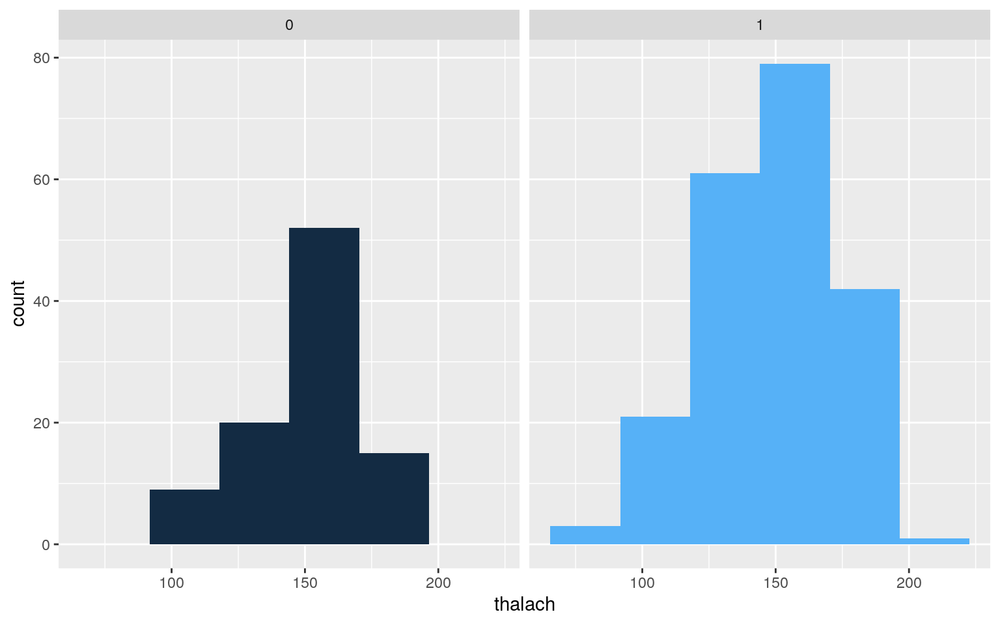
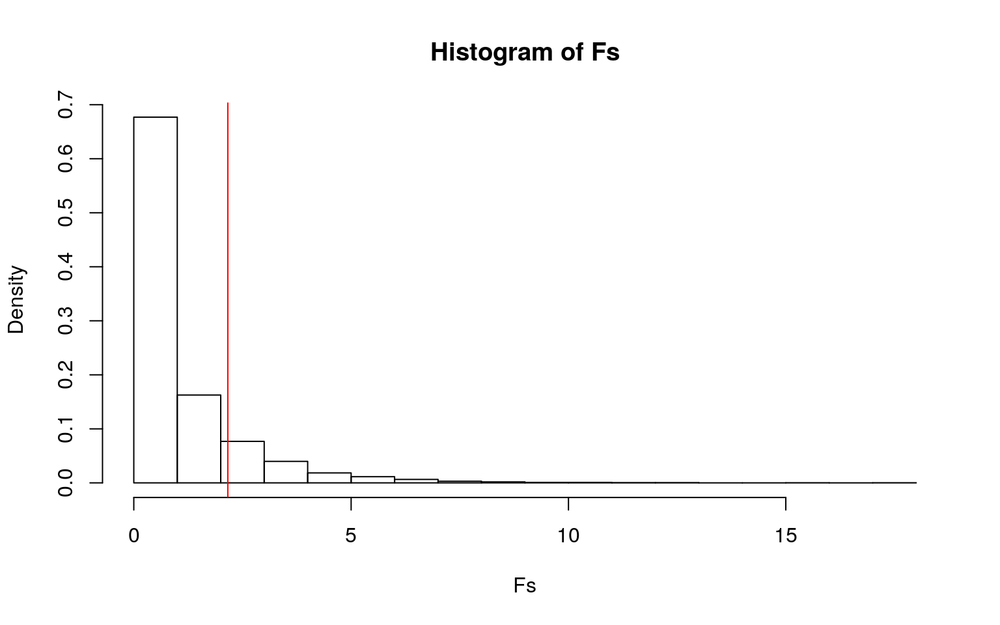
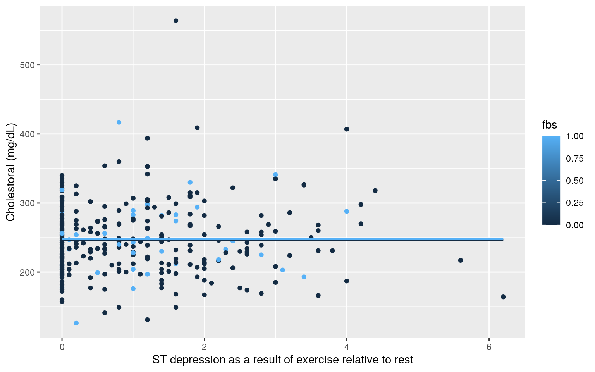
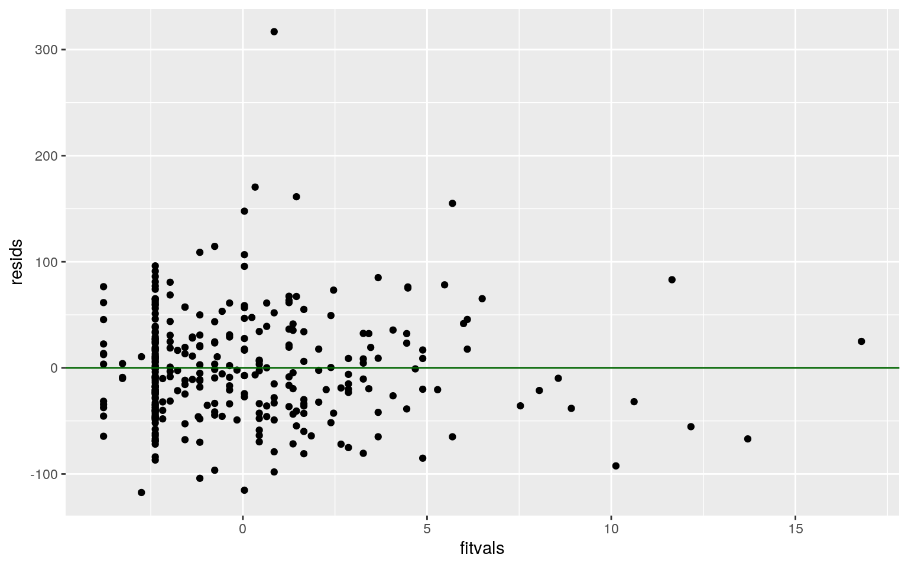
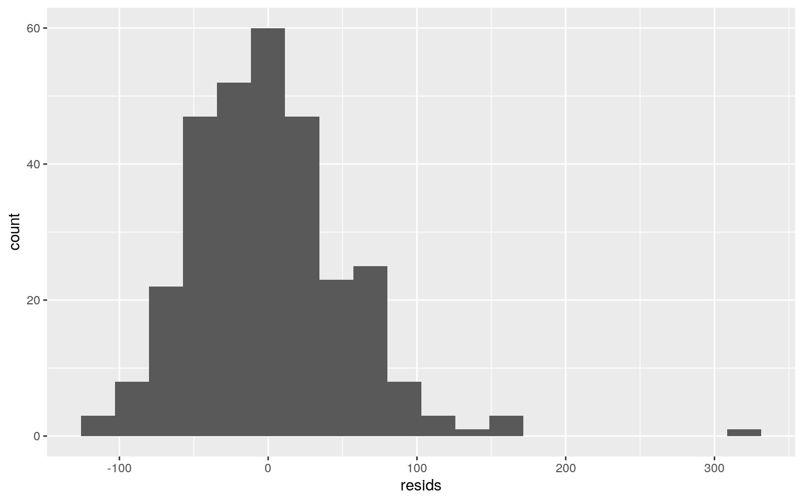
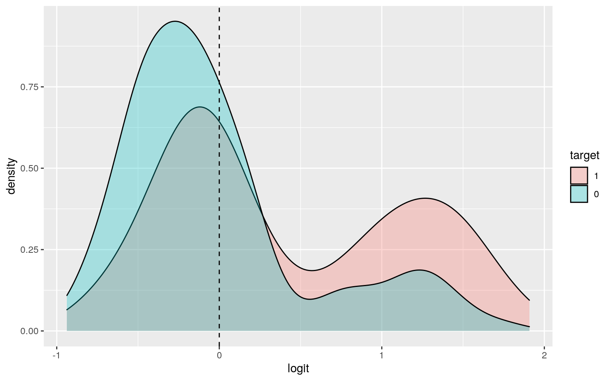
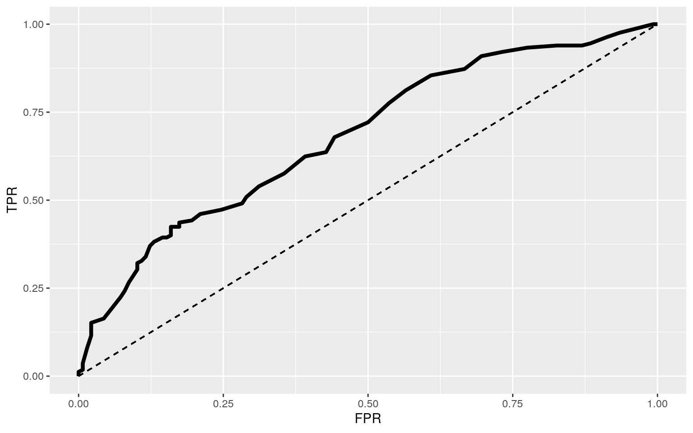

Heart disease affects 1 in 4 Americans and is the leading cause of death in the United States. In order to understand the relationship of different variables on certain indicators of cardiovascular health, this Heart Disease dataset was selected. The dataset looks at 303 participants ranging from ages 29 to 77 (inclusive).
Though the dataset utilized has 14 distinct variables, the variables that will be inspected are age (in years), sex (where 1 indicates male and 0 indicates female), cp (chest pain, where 1 = typical angina, 2 = atypical angina, 3 = non-anginal pain, and 4 = asymptomatic), trestbps (resting blood pressure mm/Hg), chol (cholestoral in mg/dL), fbs (fasting blood sugar, 1 indicating a value greater than 120 mg/dl, and 0 indicating less than 120 mg/dl), restecg (ECG results when resting), exang (exercise induced angina), slope (slope of peak ST segment on ECG), thalach (maximum heart rate achieved), oldpeak (which is the ST depression- on an EKG- as a result of exercise relative to rest), ca (number of vessels highlighted by fluoroscopy),thal (thalium stress test result), and target (which indicates the presence of heart disease based on the diameter of the blood vessel; where 0 indicates less than 50% of the blood vessel narrowing and 1 indicates, greater than 50% of the blood vessel narrowing).
library(readr)
#Dataset utilized
heart_data<- read_csv("heart.csv")
max(heart_data$age)## [1] 77min(heart_data$age)## [1] 29#MANOVA test perfromed on heart data
manova1 <- manova(cbind(trestbps, thalach, oldpeak) ~ cp, data = heart_data)
summary(manova1)## Df Pillai approx F num Df den Df Pr(>F)
## cp 1 0.095259 10.494 3 299 1.393e-06 ***
## Residuals 301
## ---
## Signif. codes: 0 '***' 0.001 '**' 0.01 '*' 0.05 '.' 0.1
' ' 1#Univariate Anova test performed on heart data
summary.aov(manova1)## Response trestbps :
## Df Sum Sq Mean Sq F value Pr(>F)
## cp 1 211 210.54 0.6838 0.4089
## Residuals 301 92681 307.91
##
## Response thalach :
## Df Sum Sq Mean Sq F value Pr(>F)
## cp 1 13860 13859.9 28.854 1.564e-07 ***
## Residuals 301 144583 480.3
## ---
## Signif. codes: 0 '***' 0.001 '**' 0.01 '*' 0.05 '.' 0.1
' ' 1
##
## Response oldpeak :
## Df Sum Sq Mean Sq F value Pr(>F)
## cp 1 9.07 9.0665 6.8558 0.009282 **
## Residuals 301 398.06 1.3225
## ---
## Signif. codes: 0 '***' 0.001 '**' 0.01 '*' 0.05 '.' 0.1
' ' 1#post-hoc t-tests
#trestbps
pairwise.t.test(heart_data$trestbps, heart_data$cp, p.adj = "none")##
## Pairwise comparisons using t tests with pooled SD
##
## data: heart_data$trestbps and heart_data$cp
##
## 0 1 2
## 1 0.2056 - -
## 2 0.4876 0.5214 -
## 3 0.0241 0.0047 0.0105
##
## P value adjustment method: none#thalach
pairwise.t.test(heart_data$thalach, heart_data$cp, p.adj = "none")##
## Pairwise comparisons using t tests with pooled SD
##
## data: heart_data$thalach and heart_data$cp
##
## 0 1 2
## 1 1.2e-09 - -
## 2 3.2e-07 0.0713 -
## 3 0.0013 0.2273 0.9443
##
## P value adjustment method: none#oldpeak
pairwise.t.test(heart_data$oldpeak, heart_data$cp, p.adj = "none")##
## Pairwise comparisons using t tests with pooled SD
##
## data: heart_data$oldpeak and heart_data$cp
##
## 0 1 2
## 1 7.4e-09 - -
## 2 9.9e-05 0.01342 -
## 3 0.97371 0.00011 0.02102
##
## P value adjustment method: none#Probability of at least one Type I Error
#1 Manova + 3 Anova + 9 t-tests
1-(0.95^13)## [1] 0.4866579#Bonferri correction
0.05/13## [1] 0.003846154#male vs female
ggplot(heart_data,aes(thalach,fill=sex))+geom_histogram(bins=6.5)+
facet_wrap(~sex,ncol=2)+theme(legend.position="none")
#mean diff
heart_data%>%group_by(sex) %>% summarize(means=mean(thalach)) %>% summarize(`mean_diff`=diff(means))## # A tibble: 1 x 1
## mean_diff
## <dbl>
## 1 -2.16summary(aov(thalach~sex,data=heart_data))## Df Sum Sq Mean Sq F value Pr(>F)
## sex 1 307 307.0 0.584 0.445
## Residuals 301 158136 525.4obs_F<-2.163647 #this is the observed F-statistic
Fs<-replicate(5000,{
new<-heart_data%>%mutate(thalach=sample(thalach))
SSW<- new%>%group_by(sex)%>%summarize(SSW=sum((thalach-mean(thalach))^2))%>% summarize(sum(SSW))%>%pull
SSB<- new%>%mutate(mean=mean(thalach))%>%group_by(sex)%>%mutate(groupmean=mean(thalach))%>%summarize(SSB=sum((mean-groupmean)^2))%>%summarize(sum(SSB))%>%pull
(SSB/1)/(SSW/301)
})
hist(Fs, prob=T); abline(v = obs_F, col="red",add=T)
#p-value
mean(Fs>2.163647)## [1] 0.14#Independent-samplest test for comparison
t.test(data=heart_data,thalach~sex)##
## Welch Two Sample t-test
##
## data: thalach by sex
## t = 0.8178, df = 219.79, p-value = 0.4144
## alternative hypothesis: true difference in means is not
equal to 0
## 95 percent confidence interval:
## -3.050537 7.377831
## sample estimates:
## mean in group 0 mean in group 1
## 151.1250 148.9614heart_data$chol_new<- heart_data$chol-mean(heart_data$chol)
heart_data$oldpeak_new<- heart_data$oldpeak-mean(heart_data$oldpeak)
fit2 <- lm(chol_new ~ oldpeak_new * fbs, data=heart_data); summary(fit2)##
## Call:
## lm(formula = chol_new ~ oldpeak_new * fbs, data =
heart_data)
##
## Residuals:
## Min 1Q Median 3Q Max
## -117.51 -35.55 -5.70 29.10 316.89
##
## Coefficients:
## Estimate Std. Error t value Pr(>|t|)
## (Intercept) -0.2817 3.2371 -0.087 0.931
## oldpeak_new 2.0170 2.7535 0.733 0.464
## fbs 1.8467 8.4007 0.220 0.826
## oldpeak_new:fbs 3.1268 7.8157 0.400 0.689
##
## Residual standard error: 52 on 299 degrees of freedom
## Multiple R-squared: 0.003613, Adjusted R-squared:
-0.006384
## F-statistic: 0.3614 on 3 and 299 DF, p-value: 0.7809#Plot
ggplot(heart_data, aes(x=oldpeak, y=chol,group=fbs))+geom_point(aes(color=fbs))+
geom_smooth(method="lm",formula=y~1,se=F,fullrange=T,aes(color=fbs))+
xlab("ST depression as a result of exercise relative to rest") + ylab("Cholestoral (mg/dL)")
#assumptions (linearity, homoskedsaticity)
resids<-fit2$residuals
fitvals<-fit2$fitted.values
ggplot()+geom_point(aes(fitvals,resids))+geom_hline(yintercept=0, color='darkgreen')
#Normality
ggplot()+geom_histogram(aes(resids), bins=20)
library(lmtest)
library(sandwich)
#H0: homoskedastic
bptest(fit2) ##
## studentized Breusch-Pagan test
##
## data: fit2
## BP = 2.7678, df = 3, p-value = 0.4288#robust standard errors
#uncorrected SEs
summary(fit2)$coef[,1:2]## Estimate Std. Error
## (Intercept) -0.2816704 3.237135
## oldpeak_new 2.0169963 2.753537
## fbs 1.8467032 8.400724
## oldpeak_new:fbs 3.1268095 7.815702#corrected SE
coeftest(fit2, vcov = vcovHC(fit2))[,1:2]## Estimate Std. Error
## (Intercept) -0.2816704 3.261045
## oldpeak_new 2.0169963 3.101140
## fbs 1.8467032 8.485697
## oldpeak_new:fbs 3.1268095 8.099177summary(fit2)$r.sq## [1] 0.003612751fit2 <- lm(chol_new ~ oldpeak_new * fbs, data=heart_data); summary(fit2)##
## Call:
## lm(formula = chol_new ~ oldpeak_new * fbs, data =
heart_data)
##
## Residuals:
## Min 1Q Median 3Q Max
## -117.51 -35.55 -5.70 29.10 316.89
##
## Coefficients:
## Estimate Std. Error t value Pr(>|t|)
## (Intercept) -0.2817 3.2371 -0.087 0.931
## oldpeak_new 2.0170 2.7535 0.733 0.464
## fbs 1.8467 8.4007 0.220 0.826
## oldpeak_new:fbs 3.1268 7.8157 0.400 0.689
##
## Residual standard error: 52 on 299 degrees of freedom
## Multiple R-squared: 0.003613, Adjusted R-squared:
-0.006384
## F-statistic: 0.3614 on 3 and 299 DF, p-value: 0.7809samp_distn <- replicate(5000, {
boot_dat <- heart_data[sample(nrow(heart_data), replace=TRUE),]
fit3 <- lm(chol_new ~ oldpeak_new * fbs, data=boot_dat)
coef(fit3)
})
samp_distn%>%t%>%as.data.frame%>%summarize_all(sd)## (Intercept) oldpeak_new fbs oldpeak_new:fbs
## 1 3.284595 3.048741 8.322165 7.713645class_diag<-function(probs,truth){
tab<-table(factor(probs>.5,levels=c("FALSE","TRUE")),truth)
acc=sum(diag(tab))/sum(tab)
sens=tab[2,2]/colSums(tab)[2]
spec=tab[1,1]/colSums(tab)[1]
ppv=tab[2,2]/rowSums(tab)[2]
if(is.numeric(truth)==FALSE & is.logical(truth)==FALSE) truth<-as.numeric(truth)-1
#CALCULATE EXACT AUC
ord<-order(probs, decreasing=TRUE)
probs <- probs[ord]; truth <- truth[ord]
TPR=cumsum(truth)/max(1,sum(truth))
FPR=cumsum(!truth)/max(1,sum(!truth))
dup<-c(probs[-1]>=probs[-length(probs)], FALSE)
TPR<-c(0,TPR[!dup],1); FPR<-c(0,FPR[!dup],1)
n <- length(TPR)
auc<- sum( ((TPR[-1]+TPR[-n])/2) * (FPR[-1]-FPR[-n]) )
data.frame(acc,sens,spec,ppv,auc)
}
#regression and coefficient estimates
reg1 <- glm(target ~ sex + chol, data = heart_data, family = "binomial")
coeftest(reg1)##
## z test of coefficients:
##
## Estimate Std. Error z value Pr(>|z|)
## (Intercept) 2.8131216 0.7102617 3.9607 7.474e-05 ***
## sex -1.4847708 0.2904969 -5.1111 3.202e-07 ***
## chol -0.0064188 0.0024610 -2.6082 0.009101 **
## ---
## Signif. codes: 0 '***' 0.001 '**' 0.01 '*' 0.05 '.' 0.1
' ' 1exp(coef(reg1))## (Intercept) sex chol
## 16.6618483 0.2265543 0.9936018#predicted probability
prob4 <- predict(reg1, type = "response")
heart_data$prob4 <- predict(reg1, type="response")
#class diagnostics
#accuracy, sensitivity, specificity, and ppv
class_diag(prob4, heart_data$target) ## acc sens spec ppv auc
## 1 0.6072607 0.5757576 0.6449275 0.6597222 0.6828502#confusion matrix
table(predict = prob4 > 0.5, truth = heart_data$fbs) %>% addmargins()## truth
## predict 0 1 Sum
## FALSE 135 24 159
## TRUE 123 21 144
## Sum 258 45 303#density of log-odds (logit)
heart_data$logit<-predict(reg1)
heart_data$target<-factor(heart_data$target,levels=c(1,0))
ggplot(heart_data, aes(logit, fill=target)) + geom_density(alpha=.3) + geom_vline(xintercept=0,lty=2)
library(plotROC)
library(tidyverse)
library(lmtest)
library(pROC)
#ROC
sens<-function(p,data=heart_data, y=target) mean(heart_data[heart_data$target==1,]$prob4>p)
spec<-function(p,data=heart_data, y=target) mean(heart_data[heart_data$target==0,]$prob4<p)
sensitivity<-sapply(seq(0,1,.01),sens,heart_data)
specificity<-sapply(seq(0,1,.01),spec,heart_data)
ROC1<-data.frame(sensitivity,specificity,cutoff=seq(0,1,.01))
ROC1$TPR<-sensitivity
ROC1$FPR<-1-specificity
ROC1%>%ggplot(aes(FPR,TPR))+geom_path(size=1.5)+geom_segment(aes(x=0,y=0,xend=1,yend=1),lty=2) + scale_x_continuous(limits = c(0,1))
ROCplot<-ggplot(heart_data)+geom_roc(aes(d=target,m=prob4), n.cuts=0) +
geom_segment(aes(x=0,xend=1,y=0,yend=1),lty=2)
calc_auc(ROCplot)## PANEL group AUC
## 1 1 1 NA
## 2 1 2 NA#10-fold CV
set.seed(1234)
k=5
data1 <- heart_data[sample(nrow(heart_data)), ]
folds <- cut(seq(1:nrow(heart_data)), breaks = k, labels = F)
diags <- NULL
for (i in 1:k) {
train <- data1[folds != i, ]
test <- data1[folds == i, ]
truth <- test$target
fit3 <- glm(target ~ sex + chol, data = heart_data, family = "binomial")
prob2 <- predict(fit3, newdata = test, type = "response")
preds <- ifelse(prob2 > 0.5, 1, 0)
diags <- rbind(diags, class_diag(prob2, truth))
}
apply(diags,2,mean)## acc sens spec ppv auc
## 0.6075410 0.6476157 0.5752330 0.5569600 0.6854544#lasso
library(glmnet)
y<-as.matrix(heart_data$target) #grab response
x<-model.matrix(target~.,data=heart_data)[,-1] #grab predictors
head(x)## age sex cp trestbps chol fbs restecg thalach exang
oldpeak slope ca thal chol_new oldpeak_new
## 1 63 1 3 145 233 1 0 150 0 2.3 0 0 1 -13.264026 1.260396
## 2 37 1 2 130 250 0 1 187 0 3.5 0 0 2 3.735974 2.460396
## 3 41 0 1 130 204 0 0 172 0 1.4 2 0 2 -42.264026 0.360396
## 4 56 1 1 120 236 0 1 178 0 0.8 2 0 2 -10.264026
-0.239604
## 5 57 0 0 120 354 0 1 163 1 0.6 2 0 2 107.735974
-0.439604
## 6 57 1 0 140 192 0 1 148 0 0.4 1 0 1 -54.264026
-0.639604
## prob4 logit
## 1 0.4582898 -0.16722941
## 2 0.4313491 -0.27634900
## 3 0.8181237 1.50368658
## 4 0.4535132 -0.18648581
## 5 0.6320140 0.54086673
## 6 0.5239670 0.09594134x<-scale(x)
cv<-cv.glmnet(x,y,family="binomial")
lasso<-glmnet(x,y,family="binomial",lambda=cv$lambda.1se)
coef(lasso)## 18 x 1 sparse Matrix of class "dgCMatrix"
## s0
## (Intercept) 0.1794092
## age .
## sex .
## cp 0.4478449
## trestbps .
## chol .
## fbs .
## restecg .
## thalach 0.2841438
## exang -0.2843095
## oldpeak -0.3898925
## slope 0.1017330
## ca -0.4051156
## thal -0.2447432
## chol_new .
## oldpeak_new .
## prob4 0.1965100
## logit 0.1122657set.seed(1234)
k=10
data <- heart_data %>% sample_frac #put rows of dataset in random order
folds <- ntile(1:nrow(data),n=10) #create fold labels
diags<-NULL
for(i in 1:k){
train <- data[folds!=i,] #create training set (all but fold i)
test <- data[folds==i,] #create test set (just fold i)
truth <- test$target #save truth labels from fold i
fit <- lm(target ~ + cp + slope + oldpeak + exang + thalach + exang + thal, data = heart_data, family = "binomial")
probs <- predict(fit, newdata=test, type="response")
diags<-rbind(diags,class_diag(probs,truth))
}
diags%>%summarize_all(mean)## acc sens spec ppv auc
## 1 0.455914 1 0 0.455914 0.8656677Note that the echo = FALSE parameter was added to the code chunk to prevent printing of the R code that generated the plot.